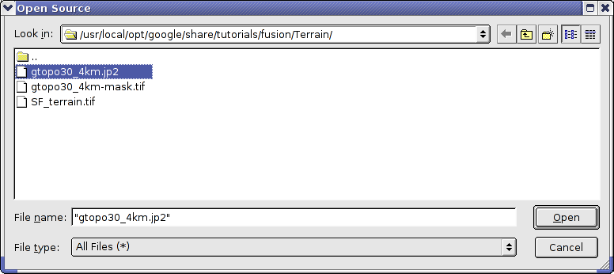
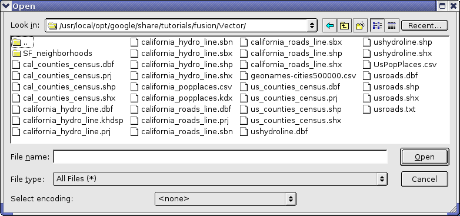
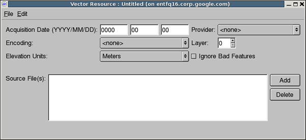
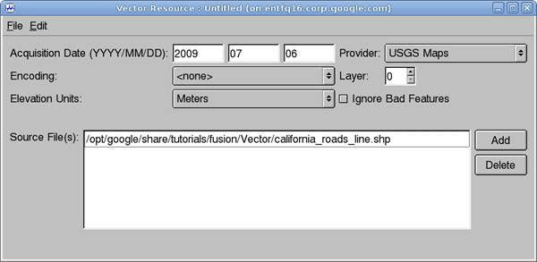

The first step in preparing data is to define resources by importing the source data into Google Earth Enterprise Fusion. You import imagery, terrain, and vector data separately.
This lesson guides you through defining and building imagery, terrain, and vector resources.
The following exercises guide you through exploring your source data and defining and building imagery resources. Resources comprise the most basic components of a Google Earth Enterprise Fusion database.
In this exercise, you learn to use the Preview panes in the Google Earth Enterprise Fusion GUI to investigate imagery source files to be sure they cover the desired area before you import them into Google Earth Enterprise Fusion.
The following limitations apply to previewing data.
 .
. /opt/google/share/tutorials/fusion/Imagery/usgsLanSat.jp2 and click Open. The image name appears in the Preview List pane. This is called a layer (an individual source file or resource).

A bounding box in the Preview pane indicates the extents of the imagery in the selected file.

The Preview pane zooms to show only the region in the selected imagery file.

When you select the checkbox next to this second layer, a bounding box indicates the extents of the second layer within the first layer. You can see the relationship of each area to the other in the Preview pane.

A message prompts you to confirm that you want to remove all layers from the Preview panes.
In this exercise, you create imagery resources from the imagery data provided for this tutorial.
 on the toolbar. The Imagery Resource window appears.
on the toolbar. The Imagery Resource window appears.

The date you set for the imagery Acquisition Date is visible in the Google Earth Client when hovering the cursor over a tile. If you add this information to the imagery at a later point, a rebuild of the imagery project is required (as the date needs to be encoded in the JPEG tiles).
When entering date information, the day or month values can be left blank. For example:
2008-01-00 indicates January 2008 2008-00-00 indicates 20080000-00-00 indicates undefined.Leading zeros are not required when entering dates.
Note: When you work with real data, the acquisition date should reflect the date the data was released. You can obtain this information from the provider. However, for the purpose of simplifying this tutorial, use the current date for all Acquisition Date fields.
You are about to import the BlueMarble source data. Since that data covers the entire world, there is no need for a mask. That is, there is no fill data to mask out in the imagery. (For details about masking, see the Mask Options section (under Defining Imagery Resources) in the Google Earth Enterprise Reference Guide.
The Open Source dialog opens to the /opt/google/share/tutorials/fusion/Imagery folder.
bluemarble_4km.jp2 file, and click Open. /ASSET_ROOT/Resources/Imagery folder you created in the previous chapter. Notes: Your system administrator should have configured a tutorial environment for you to work on the tutorial lessons, keeping your practice data separate from your live production data. If you encounter an error message that tells you that a tutorial source file is not readable or you cannot save a resource, contact your system administrator or refer to the Google Earth Enterprise Administration Guide and configure the tutorial environment yourself before saving any practice data.
When you finish using any of the asset editors (such as the Imagery Resource Editor used in this exercise), you can either leave it open and move it to the side or close it. Generally, if you know you have more work to do on a given asset, you leave the editor open. If you know you are done with an asset for now, you can close it and get it out of the way.
Caution: When you are defining assets for your live production system, it is important to remember that you cannot delete or edit asset names after you save them.
In the Asset Manager, the name of the resource appears on the right when you select the /ASSET_ROOT/Resources/Imagery folder in the asset navigation tree.

Before you can view the imagery resource in the Preview pane or include it in a project, you must build it. You do not have to build each resource right away, however. You can define several resources and then build them all at the same time, if you prefer. There are advantages and disadvantages to both approaches. You can develop your own routine as you get more comfortable with Google Earth Enterprise Fusion.
In this exercise, you build the first resource right away.
/ASSET_ROOT/Resources/Imagery folder.
BlueMarble appears on the right with the Current Version and the Current State set to None, indicating that the resource has not yet been built.
Note: Because imagery files are data intensive, it can take some time to build imagery resources.
The Version Properties dialog displays the most recent version of that resource. You can expand the version tree to view the status of the build in real time by clicking the + signs.
When the BlueMarble resource finishes building, its Current State column in the Asset Manager changes to Succeeded, and its Current Version column changes to the date and time the most recent build was started.
Now that you have defined and built one imagery resource, you can define and build the remaining imagery resources provided for this tutorial:
| Name (Resources/Imagery/...) |
Acquisition Date | Provider | Mask | Source file |
|---|---|---|---|---|
| SFBayAreaLanSat_20021010 | Today's date | USGS Imagery | Auto Mask Tolerance: 2 Default for all other mask values. |
usgsLanSat.jp2 |
| i3_15Meter_20041010 | Today's date | i3 | Auto Mask |
i3SF15-meter.tif |
| SFHighResInset_20061010 | Today's date | USGS Imagery | Auto Mask Default values. |
usgsSFHiRes.tif |
While the resources are building, the Asset Manager list looks something like this:

It could take several minutes to build all of the imagery resources. When the builds are all complete, it looks like this:

After you successfully build the imagery resources, you can view some of them in the Preview pane of the Google Earth Enterprise Fusion GUI.
Note: Google Earth Enterprise Fusion displays the resources in the order in which they are listed in the Preview List pane with the last asset on the list at the bottom of the stack and the first asset on the list on top. In this case, the SFHighResInset resource provides much higher resolution imagery for a small area of the SFBayAreaLanSat resource, so you want SFHighResInset to appear on top.
Bounding boxes appear where the imagery is located on the base imagery; however, they appear to be very small because the display level is so high.
The Preview pane zooms to the outermost edges of the selected layer. Notice the bounding box for the other resource.

The Preview pane zooms to the outermost edges of the selected layer.

 to view more of the San Francisco bay area, as shown in the following graphic.
to view more of the San Francisco bay area, as shown in the following graphic.
To zoom out, you can either select
 and then click in the Preview pane and push the mouse away from you, or roll the mouse wheel away from you.
and then click in the Preview pane and push the mouse away from you, or roll the mouse wheel away from you.

Defining terrain resources is very similar to defining imagery resources. The following exercises guide you through defining and building terrain resources.
As with imagery files, you can preview terrain source files to be sure they cover the correct area before you convert them to resources. Although you learned about previewing source files in a previous exercise, this exercise gives you an opportunity to learn about more about the preview tools.
.
The Open dialog appears.
/opt/google/share/tutorials/fusion/Terrain folder. SF_terrain.tif, and click Open.

The new layer name appears in the Preview List pane unchecked.

A bounding box appears for the terrain layer.
Note: The Preview pane displays a bounding box for terrain source data, not the actual terrain imagery. You must define and build terrain resources to be able to see a preview of the actual terrain.

This fills the Preview pane with the city of San Francisco. The high-resolution imagery inset, SFHighResInset, is still part of this view, and the SFBayAreaLanSat provides the background imagery.

A message prompts you to confirm that you want to remove all layers.
All of the layers disappear from the Preview panes. You can leave the preview pane zoomed in to prepare for an upcoming exercise, even though the imagery is too close to make out any details at this point.
In this exercise, you create terrain resources from the terrain data provided for this tutorial.
 on the toolbar.
on the toolbar.
The Terrain Resource Editor appears.
The mask file for your import must be located in the same folder as the source file, and the file name must match the name of the source file with -mask appended. For example, in the tutorial files provided, the source file is called gtopo30_4km.jp2, and its mask file is named gtopo30_4km-mask.tif. Google Earth Enterprise Fusion automatically applies the mask file by reference to the source file.
Note: You can use the Have Mask option for resources that contain one source file only.
The Open Source dialog opens to the /opt/google/share/tutorials/fusion/Terrain folder.

The selected file appears on the Source File(s) list.
The Save dialog appears.
/ASSET_ROOT/Resources/Terrain folder you created in Lesson 1. The name of the resource appears on the right when you select the /ASSET_ROOT/Resources/Terrain folder in the asset navigation tree.
The Terrain Resource Editor appears.
(For details about masking, see the Mask Options section in the Defining Resources chapter of the Reference Guide.)
The Open Source dialog appears.
/opt/google/share/tutorials/fusion/Terrain folder, select SF_terrain.tif, and click Open.
The selected file appears on the Source File(s) list.
The Save dialog appears.
/ASSET_ROOT/Resources/Terrain folder you created in Lesson 1. The name of the resource appears on the right when you select the /ASSET_ROOT/Resources/Terrain folder in the asset navigation tree.
As with imagery resources, in this exercise, you build the terrain resources right away.
Note: The WorldTopography terrain resource is quite large and could take up to 30 minutes to build, depending on the speed of your CPU. It is a good idea to start this exercise close to lunch time or just before you attend a meeting, so it can be building while you are busy doing something else.
/ASSET_ROOT/Resources/Terrain folder.
The terrain resources appear on the right with the Current Version and the Current State set to None, indicating that the resources have not yet been built.
The status of the resource changes to Queued and then to In Progress.
The status of the SFTerrain resource changes to Queued until the WorldTopography resource finishes building and then to In Progress.
When each resource finishes building, the Current State column in the Asset Manager changes to Succeeded, and its Current Version column changes to the date and time the most recent build was started.
Drag the SFTerrain resource into the Preview List pane, and check the box next to it.The bounding box for the terrain resource appears in the Preview pane, and the grayscale terrain imagery appears in the bounding box.
Note: Since the Preview pane in Google Earth Enterprise Fusion is meant for preview purposes only, it does not render terrain in 3D like Google Earth EC. Instead, it renders a grayscale interpretation of the terrain. The lighter pixels represent the higher elevations, and the darker pixels represent lower elevations. For this reason, the Preview pane is not useful for comparing elevation values from different resources.

Because the background is a very low-resolution image, it is hard to determine what you are looking at. The solution to this problem is to add high-resolution imagery to the Preview pane to give you a frame of reference.
ASSET_ROOT/Resources/Imagery, and drag SFBayAreaLanSat to the Preview List pane, and check the box next to it.
The higher-resolution imagery appears under the terrain imagery, so you can get a better idea of where the terrain is located.
The mask automatically generated by Google Earth Enterprise Fusion removes all of the fill data in the terrain resource, using the feather value specified in the Terrain Resource Editor.
The preview shows that the default feather of 100 pixels is far too aggressive, removing much of the terrain data around the coastline. In a real-world situation, you can provide your own mask for the data to be sure you can see every detail around the coastline. For this tutorial, however, simply adjust the feather value for the mask that Google Earth Enterprise Fusion generates automatically.
The Terrain Resource Editor appears with all of the SFTerrain resource’s settings.
Google Earth Enterprise Fusion saves the terrain resource with the same name.
The new version of the resource appears at the bottom of the list with a number after the resource name to distinguish it from other versions of the same resource.
The Preview pane displays the modified version of the resource.
Because the second version of the resource is listed below the imagery resource in the Preview List pane, it appears below the imagery in the Preview pane. Because of the list order, the imagery resource is actually obscuring the terrain resource. All you can see is the mask.
A message prompts you to confirm that you want to remove all layers.
All of the layers disappear from the Preview panes.
ASSET_ROOT/Resources/Terrain, and drag and drop the new version of the SFTerrain resource onto the Preview List pane, and check the box next to it. ASSET_ROOT/Resources/Imagery, and drag SFBayAreaLanSat to the Preview List pane, and check the box next to it.
Now you can see the preview of the terrain over the imagery. With a feather value of 5, the mask removes the fill data but removes much less of the real data, allowing the actual terrain data to be visible out to the edges of the coastline.

A message prompts you to confirm that you want to remove all layers.
All of the layers disappear from the Preview panes.
The following exercises guide you through the process of defining and building a vector resource for California highway data.
As with imagery and terrain files, you can preview vector source files to be sure they provide the data you want before you convert them to resources. This exercise provides an opportunity for you to use some additional preview tools.
.
The Open dialog appears.
/opt/google/share/tutorials/fusion/Vector folder.

california_roads_line.shp, and click Open.
The layer name appears in the Preview List pane.
california_roads_line.
The highway and road lines appear on California. (It appears below in bright green; it might appear in a different color on your screen.)


 selected on the toolbar, drag a selector rectangle around the City of San Francisco.
selected on the toolbar, drag a selector rectangle around the City of San Francisco.
The selected area is highlighted (yellow), and the data fields that correspond to the selected area appear in the Data List pane.
You can scroll through this data and sort it by columns to explore the values of each field to determine the potential attributes to use in the filters you set up in Lesson 3.
A message prompts you to confirm that you want to remove the layer.
The layer disappears from the Preview panes.
In this exercise, you define vector resources from the vector data provided for this tutorial.
The Asset Manager appears.
 on the toolbar.
on the toolbar.
The Vector Resource Editor appears.
The Open Source dialog opens to the /opt/google/share/tutorials/fusion/Vector folder.
california_roads_line.shp file, and click Open.
The selected file appears on the Source File(s) list.
The Save dialog appears.
/ASSET_ROOT/Resources/Vector folder you created in Lesson 1. The name of the resource appears on the right when you select the /ASSET_ROOT/Resources/Vector folder in the asset navigation tree.
As with the imagery and terrain resources, in this exercise, you build the vector resource right away. In fact, you must build vector resources before you can include them in projects.
/ASSET_ROOT/Resources/Vector folder.
CAHighways appears on the right with the Current Version and the Current State set to None, indicating that the resource has not yet been built.
The status of the resource changes to Queued and then to In Progress. When the CAHighways resource finishes building, its Current State column in the Asset Manager changes to Succeeded, and its Current Version column changes to the date and time the most recent build was started.
Now that you have defined and built one vector resource, you can define and build the remaining vector resources provided for this tutorial.
Follow the steps in Define a Vector Resource to define resources for the following vector source files:
california_popplaces.csv
us_counties_census.shp
After defining each resource, right-click it, and select Build from the context menu. By the time you finish defining the last resource, the other builds should all be complete.
When Google Earth Enterprise Fusion finishes building the last resource, close the Asset Manager by clicking the close box (X) in the top right corner, and go on to the next lesson.